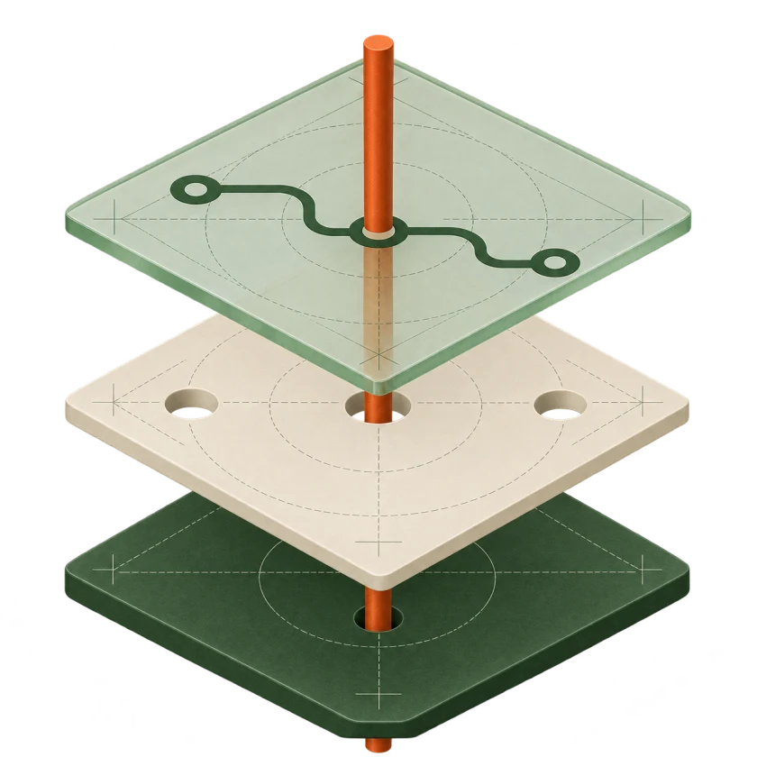

Результат работы
Агент может изменить состояние системы и сообщить, что сделал. Требования к изменению и к достоверности сообщения различаются.
AI SPRINT · ЛЕКЦИЯ 04
Азрет Магометов · 24 ноября 2026

Тестирование — исследование поведения системы в заданных условиях. Систематическую проверку ИИ на наборе задач по заданным критериям называют эвалом (evaluation).
Агент может изменить состояние системы и сообщить, что сделал. Требования к изменению и к достоверности сообщения различаются.
Со временем меняются требования, сам агент и его среда. Вместе с ними меняются условия, при которых прежние выводы сохраняют силу.
Конфигурация агента — сочетание модели, инструкций, доступных инструментов, разрешений и среды исполнения.
Свойство, которым должна обладать система, или поведение, которое она должна обеспечивать.
Условие, по которому можно установить, выполнено ли требование.
Заранее установленное ожидаемое поведение или допустимый результат, с которым сопоставляют наблюдение.
У требования может быть несколько корректных реализаций. Если способ реализации свободен, критерий описывает общее для них наблюдаемое свойство.
Проверочная задача — описание цели, исходного состояния и условий работы агента. С задачей связаны критерии её выполнения.
Постановка содержит информацию, доступную к началу работы. Позднее полученные сведения могут раскрывать решение.
Ожидаемое поведение и независимые свидетельства позволяют установить, какие требования выполнены.
Набор задач определяет охват проверки. При переносе выводов на работу команды важны и состав задач, и частота разных видов работы.
Инженер просит агента написать программу: «Покажи медленные запросы из журнала сервера». У каждого запроса есть номер и длительность в миллисекундах.
С какой длительности запрос считается медленным? Включать ли запрос ровно на пороге? Что инженер хочет увидеть в отчёте?
«В отчёте перечислены номера всех запросов длительностью 500 мс и более, каждый по одному разу. Запросы короче 500 мс в отчёт не попадают».
Назовите условие отбора и видимый результат. По этой записи два человека смогут составить один и тот же список ожидаемых номеров.
Попытка (trial) — один запуск определённой конфигурации агента на задаче из заданного исходного состояния.
Наблюдаемость — возможность восстановить существенные сведения о работе системы по данным, доступным извне.
Журнал событий программы или инструмента. Отбор событий и подробность записей зависят от настроек журналирования.
Запись связанных шагов одной попытки. Она объединяет поручение, обращения к инструментам, полученные результаты и итоговый ответ.
Фрагмент лога может входить в трейс как результат вызова инструмента. Полнота обеих записей ограничивает допустимые выводы.
Специалист соотносит наблюдения с требованиями. Метод применим к свойствам, смысл которых зависит от предметного контекста или толкования условий.
Проверяющая программа подаёт входные данные, наблюдает внешнее поведение и сопоставляет его с заданным ожиданием.
Область метода задаёт сам критерий. Формализованное свойство допускает автоматическую проверку. Свойство со спорным толкованием требует согласованного понимания требования.
Автоматический функциональный тест — исполняемая проверка связи между исходными условиями и наблюдаемым поведением системы.
Тест «В отчёт попадает только медленный запрос». Запишите ожидаемый ответ до запуска программы.
Проверка «B есть в отчёте» пропустит ошибку, если туда попадёт и A. Сравните весь список с ожидаемым.
На 120 и 730 мс правила «дольше 500 мс» и «500 мс и более» дадут одинаковый отчёт. Составьте журнал, на котором они дадут разные ответы.
На 1 мс ниже порога. A в отчёт не попадает.
Ровно на пороге. B должен попасть в отчёт.
На 1 мс выше порога. C тоже должен попасть в отчёт.
Постройте отчёт по этим трём записям. Ожидаются ровно два номера, B и C, по одному разу в любом порядке. Если в отчёте только C, программа пропустила запрос на границе.
Модель-судья (LLM-as-a-judge) — языковая модель, которая сопоставляет материал с явно заданным критерием.
Содержание работы и доступные источники сведений о ней.
Свойство, которое рассматривает судья, и условия, достаточные для вывода.
Вывод по критерию с указанием сведений, на которые он опирается.
Судья ограничен доступным материалом. Свойство внешней системы может требовать отдельного наблюдения.
Агент ответил: «Время ожидания — 30 секунд» и сослался на страницу 5. На этой странице — только инструкция по установке.
Ей дали правило «проверь, есть ли ссылка». Ссылка есть.
Он открыл страницу 5. Время ожидания там не указано.
Базовая конфигурация — зафиксированная версия агента, относительно которой рассматривают изменения.
Каждая конфигурация получает ту же задачу в сопоставимом исходном состоянии. Для обеих действуют одни критерии.
Даже на одной задаче ход работы может различаться. Повторные попытки дают сведения об устойчивости наблюдаемого различия.
Если одновременно изменились несколько компонентов, различие относится к конфигурациям в целом. Вклад отдельного компонента остаётся неопределённым.
Регрессия — утрата ранее обеспеченного свойства после изменения системы.
Набор проверок охватывает определённые требования и условия. Свойства за пределами этого набора остаются вне наблюдения.
Для агента с изменчивым поведением единичное различие между попытками ещё не устанавливает устойчивую регрессию.
Сабагент (subagent) — агент, которому основной агент передаёт отдельную часть работы. Он действует в собственном контексте и возвращает результат основному агенту.
Воспроизводимость условий — возможность восстановить конфигурацию, исходное состояние и правила проверки, к которым относится вывод.
Определяют существенные свойства системы. Критерии указывают, по каким наблюдениям можно установить выполнение требований.
Связывают эти свойства с конкретными задачами, попытками и условиями исполнения.
Сохраняет связь между требованиями и проверками при изменениях агента и его среды.
Новые сведения об эксплуатации уточняют область покрытия. История версий сохраняет основания прежних выводов, даже когда состав проверок меняется.
«Если два прочтения требования дают разные результаты, возьми вход, на котором они расходятся».
Агент спрашивает: «Включаем запрос ровно в 500 мс?» Инженер отвечает: «Да». Агент сохраняет ответ в tech.md.
«Каждый пункт — атомарное, проверяемое требование».
В спецификации prd.md появляется правило: «Включать номер каждого запроса длительностью 500 мс и более ровно один раз. Более короткие запросы пропускать».
Если инженер ещё не выбрал правило для 500 мс, агент переносит вопрос в спецификацию. От этого ответа зависит ожидаемый результат теста.
«Подобрать данные, на которых правдоподобная ошибка изменит проверяемый результат».
Агент описывает сценарий: A — 499 мс, B — 500 мс, C — 501 мс. Строим отчёт. Ожидаем только B и C, по одному разу. Инженер утверждает задачу для трекера Beads.
“For an automated check, give the test name and the result of its run.”
Агент пишет и запускает тест по утверждённой задаче. Перед закрытием записывает в Beads, какой тест проверил критерий и с каким результатом.
Учебный прогон test_report_threshold: с условием > 500 тест упал — в отчёте только C. С условием ≥ 500 тест прошёл — в отчёте B и C.
Что из этого вы хотели бы разобрать на примере своей задачи?